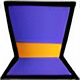

─── my stuff ───
The main part of my little world
This is where I keep the bigger themed sections: games, favorites, little archives, quotes and anything that feels more like a mini-site than a bio.
───── ❝ 𝐀𝐛𝐨𝐮𝐭 𝐌𝐞 ❞ ─────
𝘏𝘪𝘪𝘪, 𝘐'𝘮 𝘏𝘢𝘵! 𝘐'𝘮 𝘢 𝘭𝘪𝘵𝘵𝘭𝘦 𝘱𝘶𝘳𝘱𝘭𝘦 𝘵𝘰𝘱 𝘩𝘢𝘵 𝘵𝘩𝘢𝘵 𝘭𝘪𝘬𝘦𝘴 𝘮𝘢𝘬𝘪𝘯𝘨 𝘯𝘦𝘸 𝘧𝘳𝘪𝘦𝘯𝘥𝘴 ૮ ˶ᵔ ᵕ ᵔ˶ ა 𝘐 𝘴𝘵𝘢𝘳𝘵𝘦𝘥 𝘤𝘰𝘥𝘪𝘯𝘨 𝘴𝘪𝘯𝘤𝘦 𝘭𝘪𝘵𝘵𝘭𝘦, 𝘴𝘵𝘢𝘳𝘵𝘪𝘯𝘨 𝘸𝘪𝘵𝘩 𝘙𝘰𝘣𝘭𝘰𝘹 𝘚𝘵𝘶𝘥𝘪𝘰 (𝘓𝘶𝘢), 𝘯𝘰𝘸 𝘐'𝘮 𝘢𝘴𝘱𝘪𝘳𝘪𝘯𝘨 𝘧𝘰𝘳 𝘮𝘰𝘳𝘦 𝘢𝘵 𝘵𝘩𝘦 𝘶𝘯𝘪𝘷𝘦𝘳𝘴𝘪𝘵𝘺. 𝘈𝘭𝘴𝘰, 𝘐 𝘭𝘰𝘷𝘦 𝘏𝘢𝘵 𝘒𝘪𝘥 𝘧𝘳𝘰𝘮 𝘈 𝘏𝘢𝘵 𝘐𝘯 𝘛𝘪𝘮𝘦, 𝘵𝘩𝘢𝘵'𝘴 𝘸𝘩𝘺 𝘮𝘺 𝘴𝘵𝘺𝘭𝘦 𝘪𝘴 𝘣𝘢𝘴𝘦𝘥 𝘰𝘯 𝘩𝘦𝘳 :>
───── ❝ 𝐌𝐲 𝟒𝐥𝐢𝐟𝐞𝐫𝐬 ❞ ─────
𝘾𝙡𝙞𝙘𝙠 𝙖𝙣𝙮 𝙛𝙧𝙞𝙚𝙣𝙙 𝙩𝙤 𝙧𝙚𝙖𝙙 𝙖 𝙘𝙪𝙩𝙚 𝙢𝙚𝙨𝙨𝙖𝙜𝙚 ✧
───── ❝ 𝐅𝐚𝐯𝐨𝐮𝐫𝐢𝐭𝐞 𝐆𝐚𝐦𝐞𝐬 ❞ ─────
- 𝙰 𝙷𝚊𝚝 𝙸𝚗 𝚃𝚒𝚖𝚎
- 𝚂𝚝𝚊𝚛𝚍𝚎𝚠 𝚅𝚊𝚕𝚕𝚎𝚢
- 𝙼𝚒𝚗𝚎𝚌𝚛𝚊𝚏𝚝
- 𝚁𝚘𝚋𝚕𝚘𝚡
- 𝙿𝚘𝚛𝚝𝚊𝚕 𝟸
- 𝙶𝚎𝚘𝚖𝚎𝚝𝚛𝚢 𝙳𝚊𝚜𝚑
- 𝙷𝚎𝚕𝚕𝚘 𝙺𝚒𝚝𝚝𝚢 𝙸𝚜𝚕𝚊𝚗𝚍 𝙰𝚍𝚟𝚎𝚗𝚝𝚞𝚛𝚎
───── ❝ 𝐇𝐨𝐛𝐛𝐢𝐞𝐬 ❞ ─────
- 𝚆𝚊𝚝𝚌𝚑𝚒𝚗𝚐 𝙰𝚗𝚒𝚖𝚎 & 𝚁𝚎𝚊𝚍𝚒𝚗𝚐 𝙼𝚊𝚗𝚐𝚊 (𝙸 𝚃𝚘𝚒𝚕𝚎𝚝 𝙱𝚘𝚞𝚗𝚍 𝙷𝚊𝚗𝚊𝚔𝚘 𝙺𝚞𝚗)
- 𝙿𝚕𝚊𝚢𝚒𝚗𝚐 𝚟𝚒𝚍𝚎𝚘𝚐𝚊𝚖𝚎𝚜
- 𝚆𝚊𝚝𝚌𝚑𝚒𝚗𝚐 𝚖𝚘𝚟𝚒𝚎𝚜 𝚊𝚗𝚍 𝚜𝚎𝚛𝚒𝚎𝚜 (𝙸 𝚕𝚘𝚟𝚎 𝚑𝚘𝚛𝚛𝚘𝚛 𝚘𝚗𝚎𝚎𝚎𝚎𝚜𝚜)
- 𝐏𝐫𝐨𝐠𝐫𝐚𝐦𝐦𝐢𝐧𝐠 💖
- 𝚃𝚊𝚕𝚔𝚒𝚗𝚐 𝚝𝚘 𝚊𝚖𝚊𝚣𝚒𝚗𝚐 𝚙𝚎𝚘𝚙𝚕𝚎 💕
- 𝙷𝚊𝚗𝚐𝚒𝚗𝚐 𝙾𝚞𝚝
- 𝙷𝚒𝚔𝚒𝚗𝚐
- 𝙱𝚘𝚝𝚑𝚎𝚛𝚒𝚗𝚐 𝚈𝚘𝚞 𝚑𝚎𝚑𝚎 ❤︎
───── ❝ 𝐀𝐬𝐩𝐢𝐫𝐚𝐭𝐢𝐨𝐧𝐬 ❞ ─────
𝙸'𝚍 𝚕𝚘𝚟𝚎 𝚝𝚘 𝚐𝚛𝚘𝚠 𝚊𝚜 𝚊 𝚍𝚎𝚟𝚎𝚕𝚘𝚙𝚎𝚛, 𝚌𝚛𝚎𝚊𝚝𝚎 𝚠𝚑𝚘𝚕𝚎𝚜𝚘𝚖𝚎 𝚍𝚒𝚐𝚒𝚝𝚊𝚕 𝚎𝚡𝚙𝚎𝚛𝚒𝚎𝚗𝚌𝚎𝚜, 𝚊𝚗𝚍 𝚖𝚊𝚢𝚋𝚎 𝚎𝚟𝚎𝚗 𝚋𝚞𝚒𝚕𝚍 𝚊𝚗 𝚊𝚖𝚊𝚣𝚒𝚗𝚐 𝚐𝚊𝚖𝚎 𝚜𝚘𝚖𝚎𝚍𝚊𝚢. 𝙱𝚎𝚌𝚘𝚖𝚒𝚗𝚐 𝚝𝚑𝚎 𝚋𝚎𝚜𝚝 𝙲𝚘𝚖𝚙𝚞𝚝𝚎𝚛 𝙴𝚗𝚐𝚒𝚗𝚎𝚎𝚛 𝚒𝚜 𝚖𝚢 𝚐𝚘𝚊𝚕!!